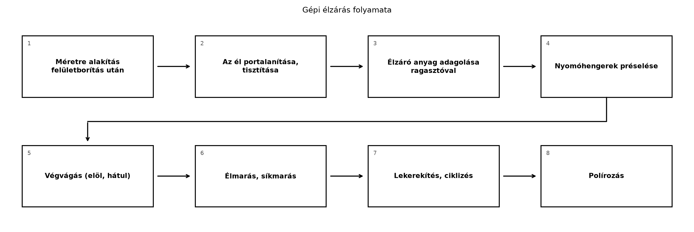

Egy megrendelő konyhaszekrényt rendel. A korpusz lapjait fehér forgácslapból szabtad, a látható felületeket lefurnéroztad, és most a lapélek csupaszok. A csupasz forgácslapél nemcsak csúnya, hanem a nedvességtől és a mechanikai hatásoktól gyorsan tönkremegy. A szekrény akkor lesz esztétikus és tartós, ha az éleket szakszerűen lezárod.
Az élzárás a felületborítás utáni legfontosabb lépés a lapszerkezetű bútoroknál. Az élzáró anyag megvédi a lap szélét, esztétikailag lezárja a rétegfelépítést, és kellemes fogást ad az alkatrésznek. Ha az élzárás rossz, a bútor azonnal „olcsó” benyomást kelt, és a reklamáció szinte biztos.
Továbbvitt eredmény. Az itt megtanult élzáró-fm számítást és élzáróanyag-választást használjuk a Korpuszbútorok és tároló bútorok gyártástechnológiája alfejezetben, valamint az Anyagszükséglet-számítás: tömörfa, lapanyag, élzáró, vasalat, ragasztó, felületkezelő alfejezetben.
Képzelj el egy 19 mm vastag fehér, laminált forgácslapból készült szekrényoldalt. A nagy felületeket fehér laminátum borítja, de a 19 mm-es szélén a forgácslap belső szerkezete látszik. A lap fölé helyezett 22 mm széles fehér élfólia ráolvad a szélre, és a ráfolyó 1–2 mm-es túllógást speciális maró vágja le. Az eredmény: a szél pontosan síkban van a lapfelülettel, a sarok enyhén le van kerekítve, a szín azonos a felület színével.
Az alábbi folyamatábra a gépi élzárás tipikus lépéseit mutatja:

Definíció. Az élzárás az a technológiai művelet, amellyel a faalapú lap (forgácslap, MDF, rétegelt lemez, bútorlap) szélét vékony élzáró anyaggal – furnérral, élfóliával, élléccel vagy profilozott éllel – ragasztással lezárjuk.
Definíció. Élzáró anyagok a lapélek lezárására szolgáló, kis szélességű, tekercsben vagy csíkban szállított anyagok. Gyakori típusaik:
Szabály. Az élzáró anyag szélességét a lap vastagságánál mindig nagyobbra választjuk. A túllógó részt, az ún. ráhagyást, a felragasztás után levágjuk vagy lemarjuk. A ráhagyás tipikusan 1–2 mm oldalanként (összesen 2–4 mm), de profilos élmarásnál ettől eltérhet (ellenőrizendő: gép és élzáró anyag gyártói ajánlása).
Definíció. A méretre alakítás felületborítás után azt jelenti, hogy a lapalkatrész pontos, végleges szélességét és hosszát a furnérozás vagy laminálás után, elővágós körfűrésszel vagy alsómarógéppel alakítjuk ki. Így a felületborítás esetleges túllógó vagy elcsúszott széleitől megszabadulunk, és az élzárás tiszta, derékszögű alapra kerül.
Szabály. Az élzáró anyag ragasztása előtt az él felületét portalanítani kell. A por, a viasz vagy a gyantamaradék gyengíti a ragasztókötést. A ragasztófelhordás módja lehet: hot-melt (hőre olvadó ragasztó olvasztva, majd préselés) vagy PUR (poliuretán, nedvességre térhálósodó ragasztó). A PUR erősebb, víz- és hőállóbb, de drágább és nedvességre érzékeny, ezért légmentesen zárt olvasztó és gondos géptisztítás kell; izocianát-tartalma miatt a biztonsági adatlap szerinti védelem szükséges (ellenőrizendő: gyártói adatlap).
A lapalkatrész felületborítását (furnérozás, laminálás) követően az élzárás előtt pontos méretre kell vágni a darabot. Erre jellemzően elővágó körfűrészgépet (formátumfűrészt) használunk, de alkalmas az alsómaró gép is.
Lépések elővágós körfűrészen: 1. Ellenőrizd a lap méreteit: a végleges hossz és szélesség mellett a derékszögűséget is. 2. Állítsd be a párhuzamvezetőt a kívánt méretre, és rögzítsd. 3. Az elővágó fűrészlap a lap alsó oldalán 1–2 mm mélyen előbemetsz; vágásszélessége oldalanként kb. 0,1 mm-rel nagyobb a főfűrészlapénál, és vele egy vonalban fut (ellenőrizendő: gépkönyv). Így a főfűrészlap kilépő fogai nem törik ki a bevonatot, a felületborítás nem pattog le. 4. A darabot a báziséllel a vezetőhöz szorítva, egyenletes előtolással vágd le. Használj tolófát a kéz védelmére. 5. Ha a lap mindkét szélét vágni kell, először az egyik bázisélt, majd abból a másikat derékszögben vágd meg.
Gépbiztonság. Az elővágó körfűrészen az elővágó és a fő fűrészlapot is burkolat fedi. A párhuzamvezetőt és a fűrészlapot soha ne használd darabolóütközővel kombinálva, ha a levágott darab a lap és az ütköző közé szorulhat. Az előtoláshoz tolófát, a nagy lapokhoz tolókocsit használj. Az elszívást mindig kapcsold be.
Gépbiztonság (formatizáló körfűrész). A gépet csak betanított, felügyelt tanuló kezeli. Indítás előtt: a hasítóék a fűrészlaphoz beállítva, a felső védőburkolat a munkadarab vastagságára engedve, elszívás be, vészleállító kipróbálva. Forgó fűrészlapnál kesztyűt ne viselj. Ne állj a fűrészlap síkjában (visszarúgás veszélye). A levágott kis darabot csak a fűrészlap leállása után vedd el (ellenőrizendő: MSZ EN ISO 19085 vonatkozó része, gépkönyv).
A kisebb műhelyekben vagy javításoknál gyakran kézi élzárást alkalmazunk.
Anyagok: előragasztott élfólia vagy furnér, vasaló (vagy hőlégfúvó), sima falapocska, taposóhenger, élmaró, csiszolószivacs.
Lépések: 1. Vágd le az élzáró csíkot a lap élének hosszánál 10–20 mm-rel hosszabbra. 2. A lap élt portalanítsd, szükség esetén enyhén csiszold meg és töröld le. 3. Melegítsd a vasalót közepes hőfokra (jellemzően 110–130 °C, ellenőrizendő: a ragasztó gyártói adatlapja). 4. Fektesd az élzárót az élre, a ráhagyást egyenletesen oszd el mindkét oldalra. 5. A vasalót lassan, állandó nyomással vezesd végig a csíkon. A hő megolvasztja a hátoldali ragasztót. 6. Azonnal, amíg a ragasztó meleg, nyomd le a taposóhengerrel vagy egy sima falapkával. Dolgozz rövid szakaszokban. 7. Hagyd kihűlni. A kihűlés után a végeket vágd le éles késsel vagy vágóval. 8. A túllógó éleket élmaróval mard le. Az élmaró csapágya a lap felületén fut, a kés az élszalag túllógását vágja. 9. Csiszold le a marás után a marási sorját és az él szélét finom csiszolószivaccsal.
Minőségellenőrzés. A kész élzárásnak teljes hosszon réseket nem szabad mutatnia. A ragasztó nem csuroghat ki a hézagból. Az él széle egyenletesen, sorja nélkül illeszkedjen a lapfelülethez.
A sorozatgyártásban és az egyedi bútorgyártásban is éllezáró gépet használunk. A gép az élzáró anyagot tekercsből adagolja, ragasztót visz fel, rányomja a lap élére, majd levágja a végeket és simára munkálja az élt.
Az éllezáró gép fő egységei és működésük:
Az él keresztmetszete egységről egységre változik: a ráhagyásos élzáróból síkba mart, majd lekerekített és ciklizett él lesz. A két jellegzetes hiba, a lépcső és a ragasztócsík, ugyanitt keletkezik.
Gépbiztonság. Az éllezáró gépen a ragasztóolvasztó és a ragasztófelhordó erősen felhevül: égési sérülést okozhat. A maró- és vágóegységek gyorsan forgó szerszámok; a védőburkolatokat soha ne távolítsd el. A gép a munkadarabot automatikusan továbbítja, de a kéz bevezető nyílásba nyúlása tilos. A meleg ragasztóból felszálló gőzök elszívásáról gondoskodni kell. A gépet csak betanított, felügyelt tanuló kezelheti.
Adott. Egy konyhaszekrény-oldal méretei: hossz , szélesség , vastagság . A látható elülső függőleges élt (720 mm) és a felső vízszintes élt (560 mm) szeretnénk 19 mm széles előragasztott ABS élzáróval lezárni.
Keresett. Mennyi élzáró anyag kell folyóméterben (fm) egy oldallapra, ha a ráhagyás miatt minden élre 5 mm-t hozzáadunk, és a vágási veszteséget is beleszámítjuk?
Számítás. 1. Az élzáró hossza élenként: - Elülső él: - Felső él: 2. Egy oldallapra összesen: 3. Ennyit kell levágni az élzáró tekercsből. Ha a gép automatikusan vág, a leállásnál a végvágó 2–3 mm-t vág le, de ezt a ráhagyás már tartalmazza. 4. Az eredmény: 1,29 fm élzáró kell egy oldallapra.
Ellenőrzés. A lap kerületéből legalább a lezárt élek hosszát kell lefednünk. A lezárt élek összege: . A hozzáadott 5-5 mm ráhagyás: . A számítás reális.
Második példa. Egy szekrény sorozatgyártásához 40 darab oldallapot készítünk. Minden oldallapon két hosszú élt zárunk le: a hossz 700 mm, a ráhagyás 5 mm. A vastagság 18 mm, az élzáró 19 mm széles.
Keresett. Mennyi élzáró anyag szükséges összesen fm-ben?
Számítás. 1. Egy él hossza: . 2. Egy oldallapon két ilyen él van: . 3. 40 oldallapra: . 4. Rendelési mennyiség: a tekercs hossza általában 50, 100 vagy 200 m (jellemzően, ellenőrizendő). Itt legalább 60 m kell, ezért egy 100 m-es tekercset rendelünk (a maradék a következő sorozathoz használható), hogy a selejt és a gép beállítási vesztesége is beleférjen.
Ellenőrzés. A nettó élhossz: . A ráhagyás 40·2·0,005 = 0,4 m. A teljes szükséglet 56,4 m, ami reális. A vásárlásnál a tekercs hosszától függően felfelé kerekítünk.
Cél: 18 mm vastag laminált forgácslap oldallemez szélének lezárása 19 mm széles ABS élfóliával, majd az él megmunkálása.
Anyagok: laminált forgácslap alkatrész, 19 mm széles ABS élzáró tekercs, hot-melt EVA ragasztó (vagy PUR), tisztítókendő.
Gépek, szerszámok: éllezáró gép, ellenőrző mérőeszközök (mérőszalag, tolómérő), védőkesztyű a meleg alkatrészhez, védőszemüveg, légzésvédő (elszívás mellett).
Gépbiztonság. A művelet betanított, felügyelt tanulónak szól; védőberendezés nélkül, egyedül, fáradtan ne végezd. Az éllezáró gép ragasztóolvasztója forró (jellemzően 180–200 °C, ellenőrizendő). A maró- és vágóegységek forgó szerszámai súlyos sérülést okozhatnak. A védőburkolatoknak, a vészleállítónak és az elszívásnak működnie kell.
Indítás előtti ellenőrzés: - Az élzáró tekercs anyaga, szélessége és iránya megfelelő. - A ragasztó szintje a tartályban elégséges, a hőmérséklet elérte a beállított értéket. - A ragasztófelhordó henger tiszta, a hőmérséklet egyenletes. - A nyomóhengerek szívó- vagy nyomásereje a beállításnak megfelelő. - A végvágó kés éles és a hosszütközők a lap hosszúságához vannak igazítva. - Az élmaró egységek kései élesek, a csapágyak szabadon futnak. - A darab mérete és derékszögűsége ellenőrzött. - A munkaterület tiszta, az elszívás bekapcsolva.
Számozott lépések: 1. Kapcsold be a gépet, és várd meg, amíg a ragasztó eléri az üzemi hőmérsékletet. – ellenőrzés: a gép kijelzője mutatja a hőmérsékletet. 2. Helyezd az alkatrészt a bevezető asztalra, a báziséllel az ütközőhöz szorítva. – ellenőrzés: a lap stabilan fekszik, a széle párhuzamos a vezetővel. 3. Engedd be a darabot a gépbe. A gép automatikusan továbbítja. – ellenőrzés: az egyenletes előtolást a gép végzi, a kezed ne érjen a szerszámhoz. 4. Az élzáró ragasztóval rá kerül a lap élére, a nyomóhengerek préselik. – ellenőrzés: a végén a ragasztó egyenletesen, kihagyás nélkül oszlik el. 5. A gép először a végeket vágja le. – ellenőrzés: a levágott vég 0,5 mm-en belül egyenes (tájékoztató). 6. A felső és alsó élmaró eltávolítja a túllógó élzárást. – ellenőrzés: az élzáró síkban van a lapfelülettel. 7. A lekerekítő profilmaró enyhén letöri az éleket. – ellenőrzés: a sarok egyenletes, sorja nélküli. 8. A ciklizőkés és a polírozó egység simítja és fényesíti az élt. – ellenőrzés: a felület tiszta, ragasztócsík nélküli. 9. Vedd ki a kész darabot a kimeneti asztalon, és ellenőrizd. – ellenőrzés: lásd a minőségellenőrzést.
Dokumentálás. A munkanaplóban rögzítsd a gép beállításait (hőmérséklet, előtolás, élzáró anyag típusa, ragasztó) és az elvégzett ellenőrzések eredményét.
Az élzáró ellenőrzését közvetlenül a megmunkálás után, a darab kihűlése után végezzük.
Mit ellenőrzünk? - Ragasztási hézag: az élzáró és a lapél között ne legyen látható rés. A rést szemrevételezéssel, erős fénynél nézzük. - Ragasztócsík: a lapfelületre kifolyt ragasztó nem elfogadható. A ragasztónak csak a hézagban szabad lennie. - Sorja, lépcső: az élzáró síkja pontosan a lapfelület síkjában legyen. A túlmarás vagy az alulmarás lépcsőt hoz létre. - Szín és minta: az élzáró színe és felületi mintázata illeszkedjen a lapfelülethez. - Lekerekítés egyenletessége: a profilmarás nyoma egyenletesen fusson végig, ne legyen hullámos.
Mérőeszközök: tolómérő a vastagság ellenőrzésére, derékszögelő, szemrevételezés erős fényben. A tűrés általában ±0,1 mm a lépcsőre, de ez függ a termék minőségi osztályától (ellenőrizendő).
Eltérésnél: ha a rés csekély (0,1 mm alatt), a lap még elfogadható lehet, de ha a rés látható, az alkatrész javítandó. A ragasztócsíkot le kell tisztítani, a lépcsőt után kell marni vagy csiszolni.
1. Hiba: Látható rés az élzáró és a lap él között. - Ok: a lap éle nem volt egyenes vagy szennyezett (por, viasz), a ragasztó mennyisége kevés volt, a nyomás nem volt egyenletes. - Helyes gyakorlat: a lapélt elővágóval vagy maróval egyenesre kell munkálni, portalanítani, a ragasztómennyiséget és a nyomást a gyártó szerint beállítani.
2. Hiba: Az élzáró leválik a végeknél, sarkoknál. - Ok: a végvágó kés életlen, a ragasztó nem érte el a lap végét, vagy a hőmérséklet nem volt megfelelő. - Helyes gyakorlat: a kést rendszeresen cserélni, a ragasztó hőmérsékletét ellenőrizni, és a nyomóhengert a teljes hosszon működtetni.
3. Hiba: A lapfelületen ragasztócsík látszik. - Ok: túl sok ragasztó, a ciklizőkés életlen vagy rosszul beállított, a maró nem vágta le a ragasztót. - Helyes gyakorlat: a ragasztófelhordás csökkentése, a ciklizőkés élezése és utánállítása, szükség esetén kézi tisztítás.
4. Hiba: Az élzáró széle sorjás, hullámos. - Ok: a marószerszám életlen vagy rosszul rögzített, a gép előtolása túl gyors. - Helyes gyakorlat: a szerszám cseréje, az előtolás csökkentése, a gép rezgésének ellenőrzése.
Hibaelemzési eset. Egy asztalosműhelyben az ABS élzáró több lapon is levált a sarkoknál. Az ellenőrzés azt mutatta, hogy a végvágó kés életlen volt, és a lap végét 1–2 mm-rel beljebb vágta, ezért a ragasztó nem ért a szélére. A hiba javítása: a kést kicserélték, a levágási hosszt pontosították, és a leváló éleket PUR ragasztóval visszaragasztották. A megelőzés: a végvágó kést rendszeres időközönként ellenőrzik, és a beállítást minden sorozat elején próbadarabbal tesztelik.
Egy bútorgyártó üzem irodabútorokat gyárt 18 mm vastag, melaminnal bevont forgácslapból. A korábbi kézi élzárás lassú volt, és a minőség ingadozott. A cég beruházott egy automata éllezáró gépre, amely 25 m/min sebességgel dolgozik (ellenőrizendő: gépadat). Az első sorozatnál azonban a vevő reklamált: az élek több helyen megszíneződtek, és a sarkoknál repedeztek. A hibaelemzés szerint a hot-melt ragasztó hőmérséklete a gyártói tartományon (pl. 170–200 °C, ellenőrizendő) belül is túl magasra volt állítva, és az ABS élanyag kezdte meglágyulni a ciklizés előtti meleg szakaszon. A megoldás: a ragasztó hőmérsékletét a gyártói tartomány alsó részére, 175 °C-ra állították, és az előtolást csökkentették. A következő sorozatnál a hiba megszűnt. Tanulság: minden gyártói értéket ellenőrizni kell, és a beállításokat próbadarabbal kell tesztelni.
Önellenőrzés – válaszok
1. feladat (A) Sorold fel az éllezáró gép fő egységeit és mondd el egy mondatban, mi a feladatuk.
2. feladat (A) Milyen széles élzárót rendelj 16 mm vastag laphoz, ha a ráhagyás oldalanként 1,5 mm?
3. feladat (B) Egy 600 mm hosszú és 350 mm széles, 18 mm vastag forgácslap polclap mind a négy szélét 19 mm széles ABS éllel kell lezárni. Számold ki, mennyi élzáró anyag szükséges fm-ben, ha minden élre 5 mm ráhagyást adunk.
4. feladat (B) Egy szekrény oldallapja 720 mm magas, 500 mm széles, 18 mm vastag. Az elülső és a felső éleket zárjuk le. Minden élre 5 mm ráhagyást adunk, és a gép beállításához minden élzáró csíkból további 10 mm-t le kell vágni a beállító darabhoz. Mennyi élzárót használ el a gép 10 oldallap elkészítésekor?
5. feladat (C) A ragasztócsík-hiba elemzése: Egy éllezáró gépről kikerülő lapokon mindig vékony ragasztócsík látszik a felső felület és az élzáró találkozásánál. Mi lehet az ok? Hogyan vizsgálnád, és mit javítanál?
6. feladat (D) Állíts össze rövid műveleti utasítást kézi élzáráshoz, ha egy megrendelő konyhai munkalap élére 30 mm széles, 8 mm vastag tömörfa éllécet kell ragasztani. A lépések tartalmazzák a biztonsági utasításokat is. A munkalap vastagsága 30 mm.
1. feladat megoldása. - Adagoló: az élzáró tekercset tartja, vezeti. - Ragasztófelhordó: olvasztott ragasztót visz fel az élre vagy az élzáró hátára. - Nyomóhengerek: az élzárót a laphoz préselik, amíg a ragasztó köt. - Végvágó: az élzáró végeket levágja. - Élmarók: a túllógó élzárót a lap síkjához marják. - Lekerekítő/profilmaró: az éleket letöri, profilozza. - Ciklizőkés: simítja, eltávolítja a sorját. - Polírozó: fényesíti az élt.
2. feladat megoldása. A vastagság 16 mm. A ráhagyás oldalanként 1,5 mm, tehát összesen 3 mm. A szükséges élzáró szélesség: . 19 mm széles élzárót rendelünk.
3. feladat megoldása. - Polc hossza: 600 mm, szélessége: 350 mm. - Kerületi élek: . - Ráhagyás: . - Teljes élzáró hossz: . - A polclap mind a négy széléhez 1,92 fm élzáró kell.
Ellenőrzés: A kerület 1,9 m, a ráhagyás 0,02 m, az összeg 1,92 m. Reális.
4. feladat megoldása. - Elülső él: 720 mm + 5 mm ráhagyás = 725 mm. - Felső él: 500 mm + 5 mm ráhagyás = 505 mm. - Egy oldallapra: . - 10 oldallapra: . - Beállító darab: minden élzáró csíkból 10 mm. Mivel oldallaponként 2 él van, egy oldallapnál 20 mm-t, 10 oldallapnál . - Összesen: .
Ellenőrzés: A nettó élhossz . A ráhagyás . A beállítási veszteség 0,2 m. Az összeg: . A számítás helyes.
5. feladat megoldása (hibaelemzés). - Tünet: vékony ragasztócsík a lap felső felülete és az élzáró között. - Lehetséges okok: túl sok ragasztófelhordás, életlen vagy rosszul beállított élmaró, ciklizőkés nem dolgozik, a ragasztó hőmérséklete túl alacsony (nem olvad el teljesen), a maróegység csapágya nem fut a lap síkján. - Vizsgálat: mérd meg a ragasztómennyiséget, ellenőrizd a marók és a ciklizőkés állapotát, nézd meg a ragasztó hőmérsékletét, és végezz próbadarabot. - Valódi ok: a ciklizőkés életlen volt, és a felső maró is kissé magasan állt. A ciklizőkés nem távolította el a maradék ragasztócsíkot. - Javítás: a ciklizőkés cseréje és a felső maró beállítása a lap síkjához. - Megelőzés: rendszeres szerszámkarbantartás, a beállítások ellenőrzése próbadarabbal minden sorozat előtt.
6. feladat megoldása (műveleti utasítás). - Cél: 30 mm vastag konyhai munkalap élének lezárása 30 mm széles, 8 mm vastag tömörfa élléccel. - Anyagok: bükk élléc, vízálló D3-as ragasztó (ellenőrizendő: MSZ EN 204 szerinti osztály), szorítók, csiszolópapír. - Egyéni védőeszközök: munkakesztyű, védőszemüveg. - Lépések: 1. A munkalap élét kézi gyaluval vagy alsómaróval simítsd egyenesre. – ellenőrzés: derékszögelővel, hézag nélkül. 2. Az éllécet vágd a munkalap hosszánál 10–15 mm-rel hosszabbra. 3. Portalanítsd mindkét ragasztandó felületet. 4. Hordj fel egyenletesen vízálló ragasztót az élléc hátoldalára. 5. Helyezd az éllécet a munkalap élére, igazítsd meg úgy, hogy a túllógás egyenletesen oszoljon el. 6. Szorítsd le több, jól elhelyezett szorítóval. – ellenőrzés: a ragasztó mindenhol kinyomódik a hézagból. 7. Távolítsd el a kinyomódott ragasztót nedves ronggyal, mielőtt megköt. 8. Hagyd a ragasztót a gyártói utasítás szerint kötni (jellemzően 4–8 óra, ellenőrizendő). 9. A végeket vágd le, a túllógó éllécet kézi gyaluval vagy élmaróval munkáld síkba. 10. Csiszold át az élt 120, majd 180 szemcsefinomságú csiszolópapírral.
Az élzárás célja, hogy a faalapú lap szélét védő, esztétikus, a felülethez illeszkedő anyaggal zárjuk le. Az élzáró anyag lehet furnér, élfólia (ABS, PP, akril) vagy élléc, jellemzően előragasztott kivitelben. A gyakori ragasztók: hot-melt EVA és PUR. A felületborítás után a lapot elővágó körfűrésszel vagy alsómaróval kell pontos méretre alakítani, hogy az élzárás tiszta alapra kerüljön. A gépi éllezáró gép a ragasztófelhordás, préselés, végvágás, élmarás, lekerekítés, ciklizés és polírozás lépéseit automatikusan elvégzi. A kézi élzárás vasalóval és élmaróval kis szériák, javítások esetén használatos. A szükséges élzáró mennyiséget folyóméterben számoljuk: a lezárt élek hosszához ráhagyást adunk (jellemzően 5–10 mm/él), és a teljes mennyiséget felfelé kerekítjük. A minőségi élzárás erős, résmentes, ragasztócsík nélküli, sík és sorjamentes. Az élzáró gépen a legnagyobb veszély a forró ragasztó, a forgó marók és a vonóhengerek; a gépet védőburkolattal, elszívással, vészleállítóval és betanított kezelővel szabad üzemeltetni.
Felhasznált forrástípusok: - Faipari szakkönyvek, tankönyvek (az élzáró anyagok és éllezáró gép felépítésének általános leírása). - Faipari gépek gépkönyvei (éllezáró gépek biztonsági és üzemeltetési utasításai). - Gyártói műszaki adatlapok (élzáró anyagok, ragasztók hőmérsékleti és felhordási adatai). - Szabványok az anyagokra és ragasztókra (MSZ EN 204 – ragasztók vízállósági osztálya; MSZ EN 12765 – ragasztók osztályozása; lapanyagokra vonatkozó szabványok, ellenőrizendő).
Ellenőrizendő hiányok: - A jellemző ragasztóhőmérsékletek, előtoló sebességek és marási tűrések esetében a gépkönyv és a gyártói adatlap mérvadó (jelen szövegben tájékoztató értékek). - A PUR ragasztó védőgázas tárolásának és a gépi felhordás részleteinek pontos paraméterei. - Az MSZ EN szabványok pontos számai és hatályos verziói (jelölve a szövegben). - Az élzáró anyagok vonatkozó európai szabványai és teljesítményjellemzői (ellenőrizendő).